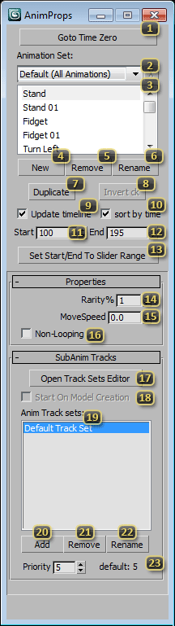

Tool: Anim Prop Floater
The Anim Prop Floater is the primary mechanism for defining animations and animation properties for StarCraft II in 3DS Max. It has three major sections: The uppermost section deals primarily with which parts of the animation to export; the 'Properties' section deals with how the engine will display the animation; and the 'SubAnim Tracks' rollout helps control which parts of the model the animation will affect.
'Goto Time Zero' changes both the current frame, and the start of the current 3DS Max Time Slider range to Frame 0. This allows logical changes to the mesh and other non-animatable features of the model.
'Animation Set Picker' controls how Animations can be grouped together and/or disabled. This dropdown allows you to pick from possible sets of animations. Type directly in the box to add a new set based on the current. Hit the 'X' to the right to remove the (non-default) current animation set.
'Animation Picker' lists the names of all Animations defined for the currently active Animation Set. Clicking an animation name here will make it the active animation for the Anim Prop Floater, and all Animation specific properties will be applied to it. If 'Update Timeline' is active, the timeline will also be set to the Animation Start and End frames. If a non-default Animation Set is active, there may be checkboxes available to enable and disable animations for that Animation Set. The currently active animation for the entire Anim Prop Floater is the highlighted item in this list.
'New' (Anim) defines a new Animation for the scene. Clicking this button will bring up a window to pick the name, start frame, and length of the animation.
'Remove' (Anim) scrubs the properties for the currently active Animation. This will remove the Anim Prop Floater's data for that entry from the scene, the animation on the model, however, will remain unchanged.
'Rename' (Anim) prompts the user to redefine the name of the currently active animation.
'Duplicate' copies the properties of the current animation, including name and length, and defines another Animation after all other Animations in the scene. This will also copy all the existing animation on the model in addition to the Anim Prop Data.
'Invert ck' flips the state of all checkboxes in the Animation Picker if a non-default Animation Set is active. This inverts the mask of animations that will be exported.
'Update Timeline' toggles whether or not selecting an Animation in the Animation Picker will change the 3DS Max timeline to match the animation.
'Sort By Time' toggles whether the Animation Picker is sorted by start time or alphabetically.
'Start' denotes the starting frame of the currently active animation. Changing this field will change the Anim Prop Data. The Anim Prop Floater will restrict you from overlapping animations when using this field.
'End' denotes the ending frame of the currently active animation. Changing this field will change the animation data. The Anim Prop Floater will restrict you from overlapping animations when using this field.
'Set Start/End To Slider Range' forcibly replaces the currently active Animation's start and end times with that of 3DS Max's current playback range. This is potentially dangerous, as you can violate the no-overlapping-animations restriction if you are not careful.
'Rarity' is the weight at which an animation will be favored amongst other variants. All weights are summed and normalized for selection, rather than a straight percentage.
'MoveSpeed' is used by the Cutscene Editor to automatically propel the model forward when 'Toggle Walk' is on. This lets your quickly iterate on walk-cycles.
'Non-Looping' causes the animation to only play a single time.
'Open Track Sets Editor' opens the Behavior Editor in Track Set Mode, where you can create and edit track sets, which restrict the Animation to parts of the model.
'Start On Model Creation', if checked, causes an animation to start playing as soon as the related model is created in the game. This isn't used much anymore and exist only as a legacy function. The job of starting animations on model creation are now mostly handled by Global Loop Animations.
'Anim Track Sets' lists Track Sets the animation will play back on. "Default Track Set" is the set of every animation track not specified in a custom Track Set. The animation will not use Track Sets that are defined, but are not present in this list.
'Add' (Track Set) allows the user to pick Track Sets defined in the Track Set Editor for the animation to play back on.
'Remove' (Track Set) removes the currently selected Track Set from the Anim Track Sets list.
'Rename' (Track Set) allows the user to change the currently selected Track Set to another.
'Priority' sets priority of the selected track set for the selected animation. The label next to the spinner shows the original default priority for the selected animation when not altered by user.